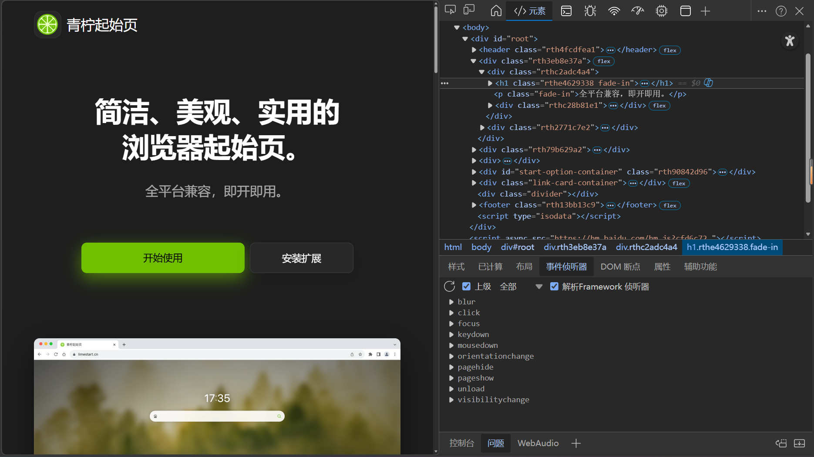

HTML语言笔记
HTML语言笔记
[!tip]
- HTML内容繁杂且细碎，这里只是列举常见的内容
- Markdown也支持部分网页效果，该笔记在说明格式的符号后会有显示效果，方便看到显示效果。
目录
HTML介绍
HTML(5)基本组成
HTML元素
HTML5新元素（简要介绍）
HTML CSS （简要介绍)
HTML里的JavaScript （简要介绍)
HTML介绍
- 当你在浏览器的网页右键打开检查时，你会不会好奇网页是什么内容？

（来自青柠起始页的网页界面）（对了这个起始页非常好用） - HTML全称为
超文本标记语言。大部分网页用HTML显示内容，而且不只是在浏览器的网页，甚至在一些手机上的app都能看到HTML的身影。 - 虽然现在AI可以很容易的生成一个网页，但是学习HTML可以方便修改AI生成的网页，并对后面
JavaScript,网页爬虫等等的学习很有帮助。
HTML（5）基本组成
html基本概念
- 元素： 为网页的基本组成单元 格式为
<标签内容>我是元素内容</后标签内容> 属性： 元素的一些选项和设置，组合可以实现不同功能
元素属性名="属性值"[!tip]
在后面有较为详细的介绍网页的基本组成
声明：声明为
HTML5文档<!DOCTYPE html>- **
HTML文档主要内容<html></html>- 头部元素 用于网页的一些格式化定义
- 标题元素
<head>我是标题 </head> - 文件编码
- 标题元素
- 身体元素 网页的主要内容
<body>我是主要内容</body>- 小标题
- 等等
1
2
3
4
5
6
7
8
9
10
11
12
13
14
15
16
17(声明为`HTML5`文档)
|----------------网页主要内容---------------|
|<html> |
| |---------------头部元素---------------| |
| | <head> | |
| | <meta charset="utf-8"> | |
| | <title>我是标题</title> | |
| | </head> | |
| |-------------------------------------| |
| |---------------身体元素---------------| |
| | <body> | |
| | <h1>我是标题</h1> | |
| | <p>我是段落</p> | |
| | </body> | |
| |-------------------------------------| |
|</html> | |
|---------------------------------------| |
- 头部元素 用于网页的一些格式化定义
HTML属性
[!tip]
元素属性需要搭配元素一起发挥作用，但是为了让学习层层递进，这个章节先集中展示元素一般的作用，作为了解即可，下个”HTML元素“章节会将元素和属性结合起来展示共同的作用。
- 属性的基本格式： `元素属性名=”属性值”
- 全局属性 在任意元素几乎都可使用
id属性 给一个标签取一个独一无二的名字<div id="header">我是头部</div>class属性 指定一个类名，方便将同类的东西标记成以内，一遍后续筛选 `This is a highlighted text.
style属性 在元素上应用CSStitle属性 补充说明元素的内容，在鼠标悬停时候会显示<abbr title="这是网页的英文">HTML</abbr>
- 特定元素的属性
- 将会与元素一起介绍
HTML元素`
HTML元素基本概念
- 标签
- 前标签
<标签内容> - 后标签
</后标签内容>
- 前标签
- 元素组成 HTML元素由标标签表示 ，一对就组成了元素
<标签内容>我是元素内容</后标签内容> - 元素属性
<标签内容 元素属性>元素属性的格式一般为<标签内容 元素属性名="属性值">
`各种元素
头部元素
- 网页标题
<title><title>我是标题</title>内容会显示在浏览器的标签页 - 链接资源
<link>`<link rel="stylesheet" type="text/css" href="mystyle.css">`- 属性
- 链接类型属性
rel- 值
stylesheet引入外部CSSicon引入网页图标
- 值
- 链接类型属性
- 属性
- 元数据元素
mate描述网页核心数据- 如防止网页乱码设置编码为UTF-8
`<meta charset="UTF-8">`
- 如防止网页乱码设置编码为UTF-8
- 导入javascript 后文有详细解释
1
2
3
4
5
6
7
8
9
10
11
12
13
14
15
16
17<!DOCTYPE html>
<html>
<head>
<meta charset="UTF-8">
<!-- 字符编码（必写） -->
<link rel="stylesheet" href="style.css">
<!-- 引入外部CSS -->
<title>极简示例页</title>
</head>
<body>
<script src="script.js"></script>
<!-- 引入外部JS -->
</body>
</html>
标题
- HTML标题 :
<H1>我是标题</H1>数字越大，标题越小 最大为6我是标题
- HTML水平线；
<hr>
- HTML注释
<!-- 我是一个注释 --><!-- 我是一个注释 -->
段落
| 标签 | 描述 | 效果 |
|---|---|---|
<b> |
粗体 | 我是示例 |
<em> |
着重文字 | 我是示例 |
<i> |
斜体 | 我是示例 |
<small> |
小号字 | 我是示例 |
<strong> |
加重语气 | 我是示例 |
<sub> |
下标 | 我是示例 |
<sup> |
上标 | 我是示例 |
<ins> |
插入字 | 我是示例 |
<del> |
删除字 |
- **计算机输出标签
| 标签 | 描述 | 效果 |
|---|---|---|
<code> |
计算机代码 | 我是示例 |
<kbd> |
键盘码 | 我是示例 |
<samp> |
计算机代码样本 | 我是示例 |
<var> |
变量 | 我是示例 |
<pre> |
预格式文本 | 我是示例 |
- 引文
| 标签 | 描述 | 效果 |
|---|---|---|
<abbr> |
缩写 | 我是示例 |
<address> |
地址 | 我是示例 |
<bdo> |
文字方向 | 我是示例 |
<blockqute> |
长的引用 | |
<q> |
短的引用 | 我是示例 |
<dif> |
定义项目 |
链接
- 基本标签
<a> - 链接属性
- 链接目标（网址 文件 js)
href<a href="https://www.example.com"></a> - 链接的打开方式
target<a href="https://www.example.com" target="_blank" rel="noopener">新窗口打开 Example</a>_blank: 在新窗口或新标签页中打开链接。_self: 在当前窗口或标签页中打开链接（默认）。_parent: 在父框架中打开链接。_top: 在整个窗口中打开链接，取消任何框架。
- 下载链接目标
download`<a href="file.pdf" download="example.pdf">下载文件</a>` - **链接锚点（点击跳转指定位置 ）
id - 类名（与CSS有关）
class`<a href="https://www.example.com" class="external-link">外部链接</a>` style直接定义CSS样式`<a href="https://www.example.com" class="external-link">外部链接</a>`
- 链接目标（网址 文件 js)
- 空链接
- 导航到顶部
href="#" - 刷新页面
href="" - 打开空白页面
href="about:blank" - 按钮（需配合js）
role="button" - 阻止跳转
href="javascript:void(0)"
- 导航到顶部
图像
- 插入图像的标签
<img> - 属性
- 源属性
src定位资源在哪里 - 替换文本属性*
alt图片没有加载出来显示的文字 - 图片的高度和宽度
heightwidth默认单位为像素1
<img src="pulpit.jpg" alt="Pulpit rock" width="304" height="228">
- 源属性
表格
表格靠一些标签排列组合表示
- 表格标签
<table> - 行标签
<tr> - 数据单元格标签
<td> - 表头单元格标签
<th> - 边框属性
border1
2
3
4
5
6
7
8
9
10
11
12
13
14
15
16
17
18
19
20
21<table>
<thead>
<tr>
<th>列标题1</th>
<th>列标题2</th>
<th>列标题3</th>
</tr>
</thead>
<tbody>
<tr>
<td>行1，列1</td>
<td>行1，列2</td>
<td>行1，列3</td>
</tr>
<tr>
<td>行2，列1</td>
<td>行2，列2</td>
<td>行2，列3</td>
</tr>
</tbody>
</table>列标题1 列标题2 列标题3 行1，列1 行1，列2 行1，列3 行2，列1 行2，列2 行2，列3
列表
无序列表
- 无序列表标签
<ul> - 无序列表内容
<li>1
2
3
4
5<ul>
<li>水</li>
<li>茶</li>
<li>冰红茶</li>
</ul>- 水
- 茶
- 冰红茶
- 无序列表标签
有序列表
- 有序列表标签
<ol> - 有序列表内容
<li>1
2
3
4
5<ol> ///有序列表标签
<li>哇哈哈</li>
<li>可乐</li> ///有序列表内容
<li>雪碧</li>
</ol>- 哇哈哈
- 可乐
- 雪碧
- 有序列表标签
区块
区块将网页分成一个个层级，方便规定样式和更改
- 区块元素
<div>通常会新开一行来表示 - 内联元素
<span>通常会在一行后接着来表示
[!tip]
这两个东西似乎现在代替了前面大多数的标签，前面有关样式的定义的标签似乎大部分被区块加上CSS所代替
表单
- 表单标识标签
<from> - 表单输入标签
<input>- 文本域 一种属性 表示输入框输入或者显示的内容
- 输入框输入文本
text - *输入框输入密码
password - 单选按钮
radio - 多选按钮
checkbox - 提交按钮
submit
- 输入框输入文本
- 文本域 一种属性 表示输入框输入或者显示的内容
- 创建下拉列表
<select>- 下拉列表的选择
<option>
- 下拉列表的选择
- 文本标签
<label>提高可读性
1 | <form action="/" method="post"> |
HTML5新元素
[!note]
HTML5的新元素应用了很多其他新知识，由于精力有限，这里只选择了和旧版HTML相似的元素，并只做简单展示
- SVG矢量图
- 概念： SVG通过
xml来定义图形，可以无损的放大和缩小 - 内嵌SVG标签 `
- 概念： SVG通过
1 |
|
数学公式
- 概念 ：与markdown一样，HTML可以插入数学公式
- 内嵌公式标签
<math>1
2
3
4
5
6
7
8
9
10
11
12
13
14
15
16
17
18
19
20
21
22
23
24
25<!DOCTYPE html>
<html>
<head>
<meta charset="UTF-8">
<title>菜鸟教程(runoob.com)</title>
</head>
<body>
<math xmlns="http://www.w3.org/1998/Math/MathML">
<mrow>
<msup><mi>a</mi><mn>2</mn></msup>
<mo>+</mo>
<msup><mi>b</mi><mn>2</mn></msup>
<mo>=</mo>
<msup><mi>c</mi><mn>2</mn></msup>
</mrow>
</math>
</body>
</html>菜鸟教程(runoob.com)
</body>
</html>视频
- 视频嵌入标签
<vidio> - 属性
- 来源属性
<source>类似于前面图片的资源定位属性 - 文件类型
type - 宽度与高度 与前面的图片相似
1
2
3<video width="320" height="240" controls>
<source src="movie.mp4" type="video/mp4">
</video>
- 来源属性
- 视频嵌入标签
- 音频
- 音频标签
<audio> - 与视频一样存在
<source>标签 ， - 同样可以在
<source>添加type属性来补充说明文件格式1
2
3<audio controls>
<source src="horse.ogg" type="audio/ogg">
</audio>
- 音频标签
HTML CSS样式
[!note]
CSS内容繁多且复杂，这里仅仅只介绍基本格式和插入方法以便后续专门学习CSS
- 概念： CSS可以设置文本的字体颜色等等内容，可以让网页变得更加美观，文件拓展名为
.css 基本格式
1
2
3
4
5
6
7p(选择器，选择网页中的元素应用这个样式)
{
样式属性1:值;
样式属性2:值;
样式属性3:值;
······
}插入方式
- 行间插入 可直接使用
style属性插入`<p style="color:red;">文字</p>` <p style="color:red;">文字</p> - 内部样式表 可以在头元素
<head>里面插入1
2
3
4
5
6<head>
<style type="text/css">
body {background-color:yellow;}
p {color:blue;}
</style>
</head> - 外部样式表 可以在头元素
<head>从外部导入CSS1
2
3<head>
<link rel="stylesheet" type="text/css" href="mystyle.css">
</head>
- 行间插入 可直接使用
HTML里的JavaScript
- 概念： JavaScript可以实现一些动画，交互，让网页可以动起来，文件拓展名为
.js - 插入方式：
- 直接插入 直接插入到
<script>标签里面1
2
3
4
5<body>
<script>
console.log('我是直接写进去的 JS');
</script>
</body> - 外部导入 在头元素
<head>导入<script>1
2
3<head>
<script src="xxx.js"></script>
</head>- 在
<body>标签导入1
2
3
4<body>
<script src="script.js"></script>
<!-- 引入外部JS（body末尾更优） -->
</body>
- 在
- 直接插入 直接插入到
版本信息：2026.3.22 （第一版）
@小洋葱的笔记本
本博客所有文章除特别声明外，均采用 CC BY-NC-SA 4.0 许可协议。转载请注明来源 小洋葱的笔记本！
相关推荐

2026-03-24
高等数学笔记
考核标准 考核项目 分值(%) 备注 平时作业 20 迟交分数最高为69 期中考试 15 思政考核 5 期末考试 60 分数要大于45,否则成绩无效 第八章 向量代数与空间几何第一节 向量及其线性运算向量的基础概念1.各种向量 向量 ： 大小+方向 自由向量 ：方向可改变 相等向量 ：大小方向相同 单位向量 ：模长为1 零向量 ：模长为0 方向任意 共面向量 ：共起点2. 向量的夹角 范围 $0\leq x\leq\pi$ 共线向量 夹角为 0 或者$\pi$ 向量的运算1. 运算 加法 ：三角形法则 首尾相接 $\overrightarrow{AB}+\overrightarrow{BC}=\overrightarrow{AC}$ 平行四边形法则 同起点，以两向量为邻边作平行四边形，对角线为和 减法 ：三角形逆法则 $\overrightarrow{AB}-\overrightarrow{AC}=\overrightarrow{CB}$ 数乘运算 结果为向量 模直接相乘，符号与方向有关 模 $|\lambda\vec{a}...
2026-03-26
数据结构笔记
先导课考核要求 考核方法 评价标准 权重（%） 期中考试 参考答案及评分标准 13 平时作业 独立按时完成作业，根据作业参考答案评定成绩。 12 实验报告 能够分析问题，设计算法，独立实现程序，运行结果正确，按照要求完成实验报告。实验报告须有详细的设计说明和代码注释，根据实验报告规范性和完成质量评定成绩。 15 闭卷 参考答案及评分标准 60 —-第一章 概论1.1 数据结构概述数据结构的概念 基础概念 数据：计算机可识别、存储和加工的信息载体 文字、表格、图像等 *数据的组成（从大到小） 数据项：具有独立意义的不可分割最小单位 学生记录中的“姓名”字段 数据元素：数据的基本单位，作为整体处理 如学生记录 数据对象：相同类型数据元素的集合。 数据结构组成： 数据逻辑结构：从逻辑关系描述数据 数据存储结构：逻辑结构在储存（映像）。 数据运算：对数据施加的操作（检索、插入、删除等）。 数据结构的组成1.数据逻辑结构 常见的逻辑 集合：元素同属一个集合，无其他关系。 线性结构：元素间一对一关系 如学生成绩表 树形结构：元素间一对...
2026-03-25
英语四级笔记
先导课四级考试试卷结构 试卷结构 测试内容 测试题型 题目数量 分值比例 每小题分值 部分小计 写作 写作 短文写作 1 15% 106.5 106.5 听力理解 短篇新闻 选择题（单选题） 7 7% 7.1 248.5 长对话 选择题（单选题） 8 8% 7.1 —- 听力篇章 选择题（单选题） 10 20% 14.2 —- 阅读理解 词汇理解 选词填空 10 5% 3.55 248.5 长篇阅读 匹配 10 10% 7.1 —- 仔细阅读 选择题（单选题） 10 20% 14.2 —- 翻译 汉译英 段落翻译 1 15% 106.5 106.5 总计 - - 57 100% 710 710 考核方式 考核形式 评价标准 权重 考勤（百分制） 无故旷课（无法提供辅导员签字的请假条）1次扣10分，迟到和早退1次扣5分；无故旷课累计3次以上取消期末考试资格 0.05 课堂表现（百分制） 积极完成课堂活动 0.10 听力（百分制） 《新视野大学英语视听说教程》听力练习正确率（校园，8单元，每个单元做5...

2026-03-24
Markdown极简使用方法
Markdown使用方法 [!TIP] 该笔记内容主要适用于Obsidian笔记软件，其他Markdown笔记软件的写法可能会有细微的差别。 该笔记在说明格式的符号后会有显示效果，方便看到显示效果。 目录Markdown介绍Markdown基本用法Mermaid 图表拓展：Markdown数学公式拓展：Markdown简单的化学式 Markdown介绍 Markdown是一种轻量化标记语言，它旨在通过一些简单的符号来快速排版文本，减少频繁设置格式的情况来提升写作的专注度，非常适合作为笔记格式使用。 Markdown的文件拓展名为.md 在输入符号时，都需要切换到英文符号输入。 Markdown基本用法行内排版 斜体 *我是示例* 我是示例 粗体 **我是示例** 我是示例 删除线 ~~我是示例~~ 我是示例 斜体+粗体 ***我是示例*** 我是示例 标黄 <mark style="background-color: rgba(255, 235, 59, 0.4); padding: 0 3px; border-radius: 2px;"&...